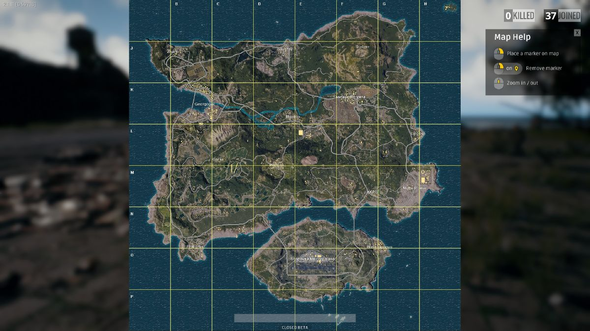
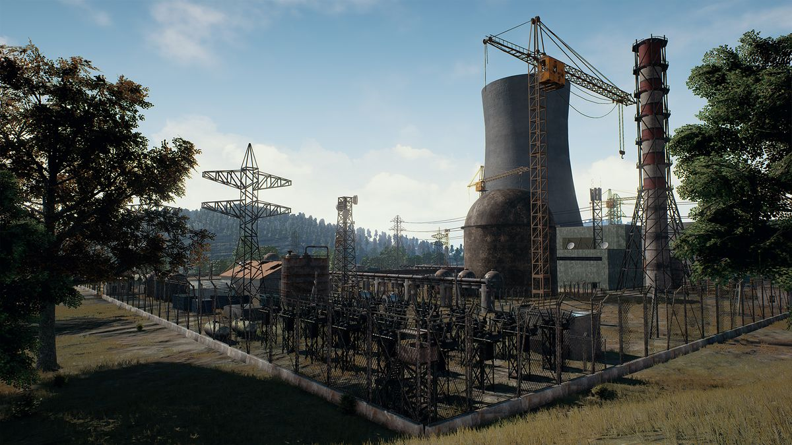
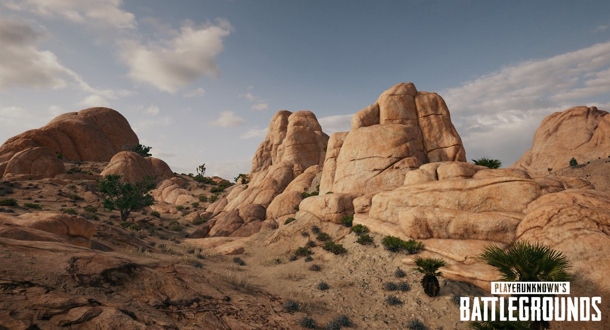
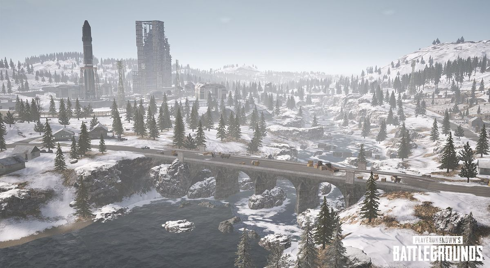
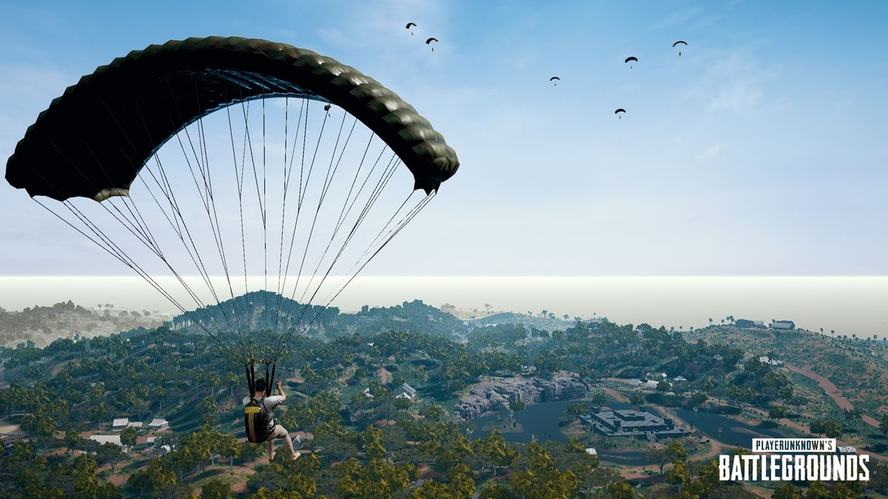
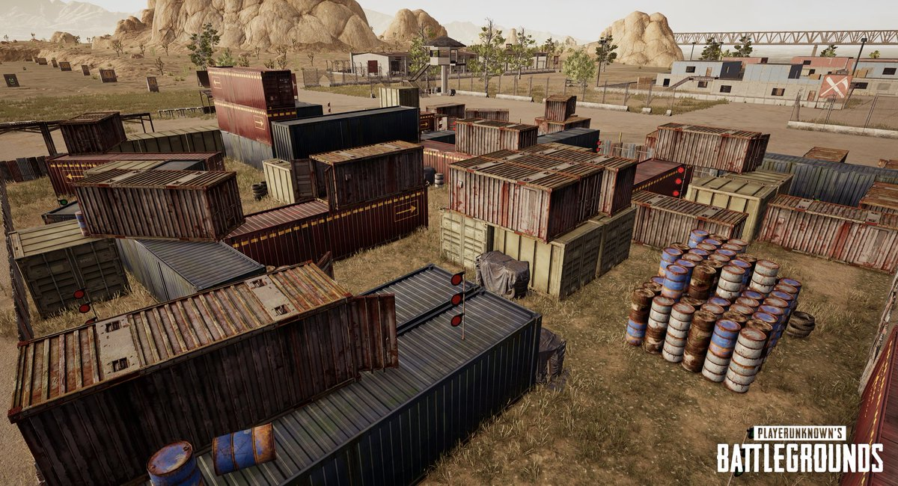

Maps
The Maps are the playable area where players are pitted against each other in BATTLEGROUNDS. Within these maps, a red zone periodically spawns onto random cities/locations causes explosions within that area and also periodically a C-130 flys over the map and drops an air drop.
Currently Erangel, Miramar, Sanhok & Vikendi are used for all the game modes.
Maps
From oldest to newest;
- Erangel (Alpha Map) a Russian map.
- Miramar(Map 2) a Central America sand map.
- Vikendi (Map 3) an Adriatic island snow map.
- Sanhok (Map 4) a Southeast Asian forest map.
Current Maps
Russia
Maps based out of the region of Russia.
Erangel

South America
Maps based out of the region of Central America/Mexico.
Miramar

Europe
Maps based out of the region of Europe.
Vikendi

Asia
Maps based out of the region of Asia.
Sanhok

Training
Map to test out weaponry and vehicles.
Range
